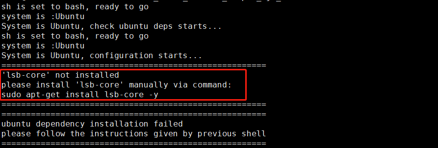

2. Prerequisites
2.1. General Descriptions
This chapter helps users walk through the preparations before using the toolchain. It consists of the Dev Machine Installation section and the Dev Board Installation section.
2.2. Dev Machine Installation
You can choose to either install and use Horizon’s Docker image or to install all necessary dependencies in your dev machine.
Hint
To avoid installation problems, we strongly recommend you to use Docker.
2.2.1. Dev Machine Preparations
The following hardware/operating system are required when using the dev machine:
HW/OS |
REQUIREMENTS |
|---|---|
CPU |
CPU above I3 or same level processor as E3/E5 |
Memory Size |
16G or above |
GPU |
at least 1 ps of 1080ti or above |
OS |
CentOS 7, Ubuntu 18 |
2.2.2. Use Docker
To help users quickly get hands on the toolchain and simplify the installation process, Horizon provides CPU and GPU Docker images in which contains all necessary development dependencies.
Before going any further, please be sure that you’ve installed Docker in your dev machine. Here below lists Horizon required basic Docker environment:
Docker (>=1.12, installation of 18.03.0-ce is recommended), Installation Manual: https://docs.docker.com/install/.
NVIDIA Docker (2.0.3), Installation Manual: NVIDIA/nvidia-docker.
Remember to add non-root users into Docker users group after installation by running below command:
sudo groupadd docker
sudo gpasswd -a ${USER} docker
sudo systemctl restart docker # CentOS7/Ubuntu
# re-login
If you use CPU Docker, please obtain the required CentOS Docker image from
Horizon OpenExplorer CPU Docker Hub ,
naming format of the CPU Docker image is: openexplorer/ai_toolchain_centos_7:{version}.
If you use GPU Docker, please obtain the required Ubuntu Docker image from
Horizon OpenExplorer GPU Docker Hub ,
naming format of the GPU Docker image is: openexplorer/ai_toolchain_ubuntu_gpu:{version}.
Tip
Replace the {version} by the actual version number when running below commands.
Remember to pull the image when you use it for the first time.
Run the following command to pull CPU Docker image:
docker pull openexplorer/ai_toolchain_centos_7:{version}
Run the following command to pull GPU Docker image:
docker pull openexplorer/ai_toolchain_ubuntu_gpu:{version}
Run your Docker container as follows:
Run CPU Docker:
// enter the top directory of the OpenExplorer package cd horizon_xj3_open_explorer_{version}_{date} // run script to enter CPU docker container sh run_docker.sh {/data}
Run GPU Docker:
// enter the top directory of the OpenExplorer package cd horizon_xj3_open_explorer_{version}_{date} // run script to enter GPU docker container sh run_docker.sh {/data} gpu
Note
As shown in the above code blocks:
User the actual version number and release date information in your obtained OpenExplorer package (referred to as the OE package) to replace the
{version}and{date}. E.g.:openexplorer/horizon_xj3_open_explorer_v1.7.0_20211101/.The
{/data}refers to the dataset path and it can lead to loading error if the path were not specified, so please run the script after create it. You can obtain public datasets fromvrftp.horizon.ai/Open_Explorer/eval_datasetand then create the directory.
😄 Congratulations! 😄 By now, you’ve entered the toolchain’s development environment in a docker container.
Type in the hb_mapper --help command to validate your installation,
if everything goes right, the console will print help information.
The hb_mapper is a toolchain frequently used tool, we will tell you more about it in the following contents.
2.2.3. Manual Installation
Before going any further, please be sure that the following requirements are met:
OS: CentOS7 or Ubuntu18.04
Python3.6
libpython3.6
python3-devel
python3-pip
gcc&c++: 4.8
graphviz
Be sure all the above-mentioned requirements are met, then go ahead and finish installing your Cross compiler, AI Tools and Other DevTool.
Cross compiler
All files required by using cross compiler are in the open_explorer release package, go get the gcc_linaro_6.5.0_2018.12_x86_64_aarch64_linux_gnu.tar.xz in the ddk/tools directory and unzip it into the /opt directory in your dev machine. Also, you need to add the
LINARO_GCC_ROOTvariable. copy the complete path of cross compiler, refer to the following command:export LINARO_GCC_ROOT=/opt/gcc-linaro-6.5.0-2018.12-x86_64_aarch64-linux-gnu/
AI Tools
AI tools are composed by a series of Horizon’s own-developed tools, there is an installation script in the open_explorer release package, enter the ddk/package/host directory and run the following command to trigger the installation:
bash install_ai_toolchain.shThe installation script will check relevant dependencies, absence of dependency or configuration can cause interruption and the following information will be displayed:
Install the missing dependency according the given information and rerun the installation script to move on.
Attention
If the reminder information points out that gcc/g++ versions are incorrect, please recreate the gcc and g++ soft links as gcc-4.8 and g++-4.8 after the required version is installed.
After successfully running the installation script, type in the
hb_mapper --helpcommand to validate your installation. if everything goes right, the console will print help information. Thehb_mapperis a toolchain frequently used tool, we will tell you more about it in the following contents.
Other DevTools
The installation script in this section can install all dependencies in application development. Find it in the ddk/package/host in the open_explorer release package and run the following command:
bash install_host_package.shThe installation script will check relevant dependencies, absence of dependency or configuration can cause interruption. In such case, install the missing dependency according the given information and rerun the installation script to move on. After installation, you can check out your installed dependencies in the ~/.horizon directory.
2.3. Dev Board Installation
You need a dev board in which contains a flashed system image and to copy relevant files into the dev board before starting dev board installation.
2.3.1. Dev Board Preparations
This section requires validating the availability of the dev board and flash an available system image into the board. Please refer to the Horizon X3J3 SOC Development Manual in the open_explorer release package for more information.
2.3.2. Supplementary Document Preparation
Some supplementary tools of the toolchain are not integrated into the open_explorer release package, feel free to install them by running the install script in the ddk/package/board directory:
bash install.sh ${board_ip}
Note
Wherein, ${board_ip} denotes the IP address of your dev board, please be sure that the IP address is accessible.
After running the install script, perform the hrt_model_exec command to validate your installation is
successfully.